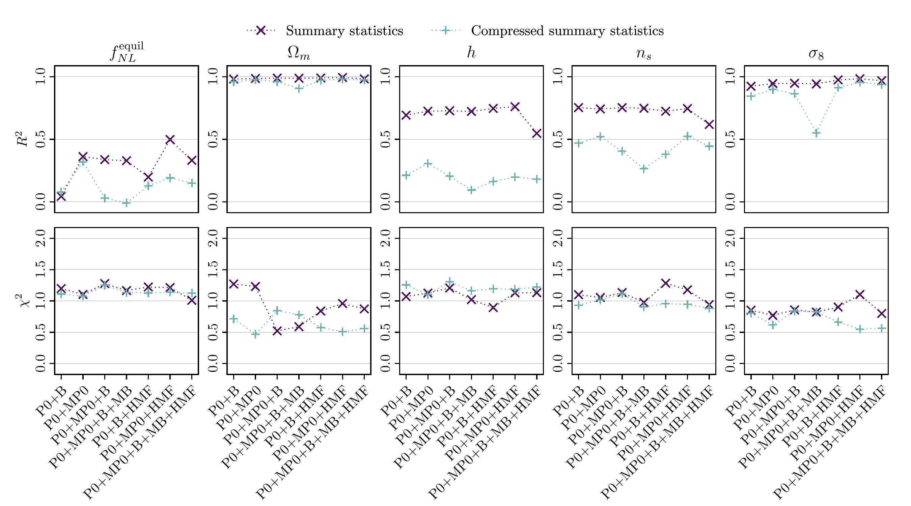

<section>
	<div class="container">
		<h3>Primordial non-Gaussianity inference on <br> non-linear scales</h3>

		<h4>Simulation based inference</h4>
		<p><span class="image fit"></span>
			Current and forthcoming cosmological surveys will provide very detailed maps of the large-scale structure of
			the universe. Vast amounts of data collected from these survey, i.e. all the small scales modes, cannot be
			analysed using fully analytical models. This constitutes a missed opportunity to shed light on long standing
			cosmological problems which would benefit from higher-statistical-significance measurements, among which is
			the determination of primordial non-Gaussianity parameters. Scales that cannot be treated analytically can
			be modelled with simulations, that we can analyse either with standard statistics or with machine learning
			techniques. In particular, moment network enables us to perform robust inference without making any
			assumption about the likelihood, which would also be difficult to treat.
			We show that the combination of power spectrum and marked power spectrum—and, if available, of the halo mass
			function—is all we need to successfully constrain the most natural non-Gaussian models. A generalization of
			our pipeline powered by boosted decision tree quantile regression goes a step further, allowing us to pick
			up the specific features, or modes, that carry the signal.<br>
			<b>References:</b><br>
			G. Jung, AR, M. Liguori, et al., <i>Quijote-PNG: The Information Content of the Halo Mass Function</i>,
			Astrophys. J. 957 (2023), no. 1 50, <a href="https://arxiv.org/abs/2305.10597"> [arXiv:2305.10597] </a> <br>
			G. Jung, AR, M. Liguori, et al., <i>Quijote-PNG: Optimizing the summary statistics to measure Primordial
				non-Gaussianity</i>, pre-print, <a href="https://arxiv.org/abs/2403.00490"> [arXiv:2403.00490] </a>
		</p>
	</div>
</section>